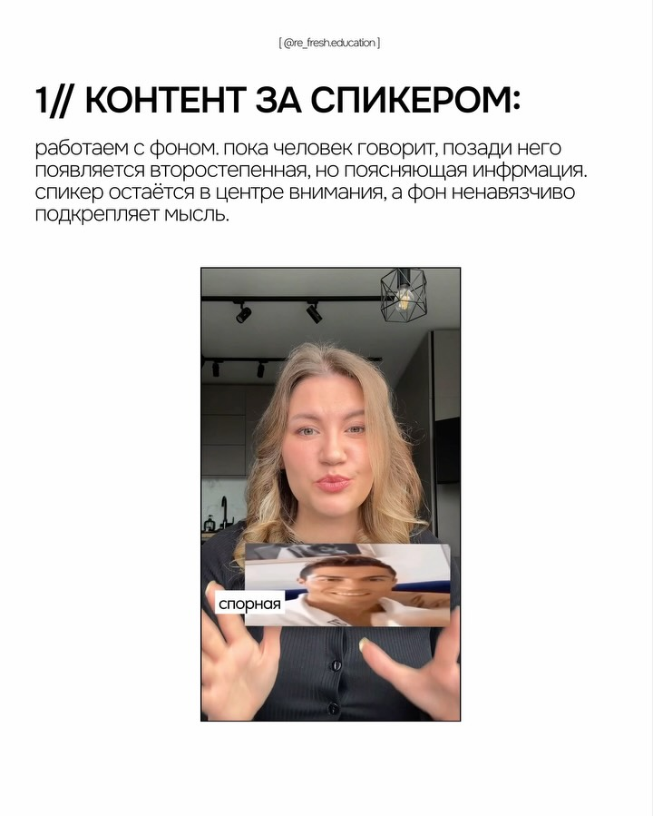
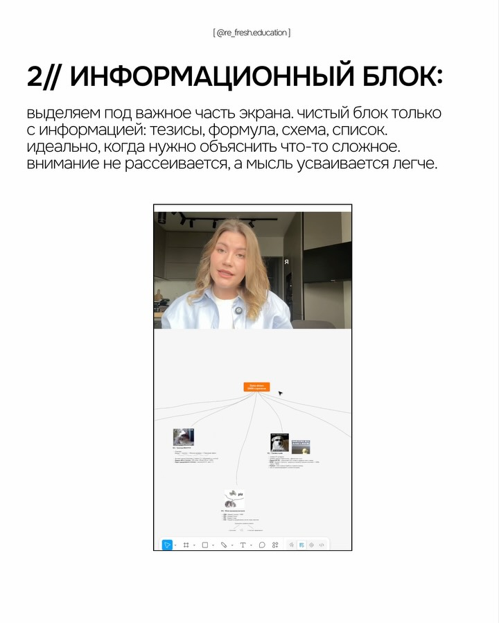
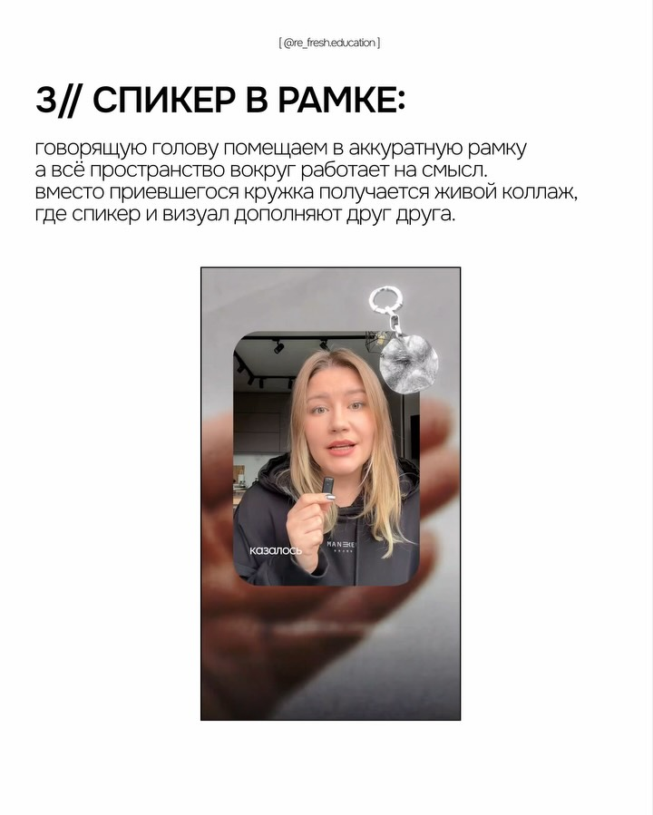
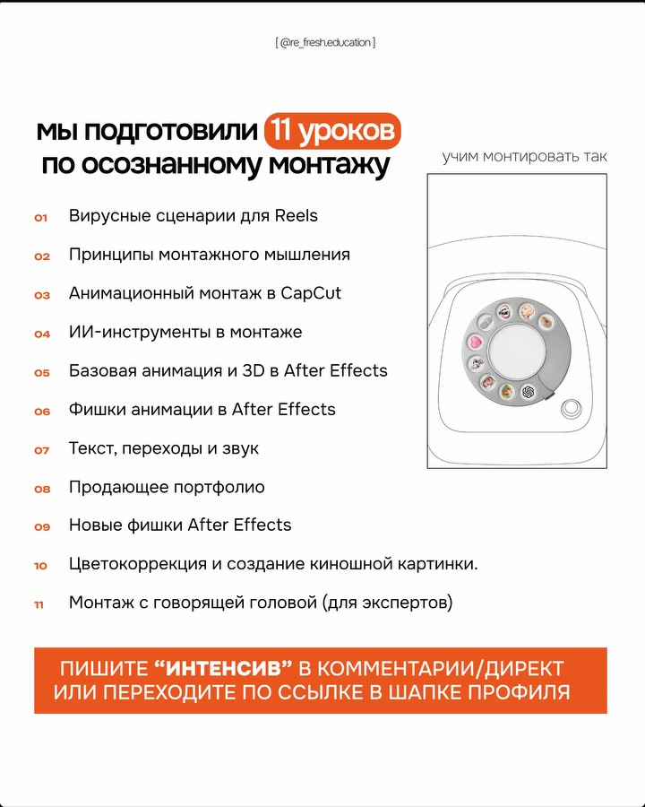

❤ 28💬 1👁 4.1K🔁 repost н/д
Расшифровка
(речь не распознана)
Описание
Если разговорные ролики получаются слишком скучными, можно попробовать эти ракурсы.
Но, конечно, это лишь инструмент, важнее сценарий и хук! А еще подача. Как я учусь снимать разговорные ролики и даю реальную практику по раскрепощению себя перед камерой, делюсь в своем ТГ канале ✨
Пиши «ТГшка» дам доступ
❤ 2.6K💬 145👁 167.7K🔁 repost н/д
Расшифровка
Короче, я уже начала монтировать с кладом и я просто дико кайфую с того, как это эффективно все происходит. Ну то есть я не понимаю, почему бы так мало говорят, но реально это очень круто и экономит время, потому что я просто закидываю сырое видео в клад и он там, по -моему, с Килу, который я с ним там завечь собрала, он монтирует, все добавляется у титры и оно выглядит реально прикольно. Короче, дальше я на своем аккаунте буду выкладывать исключительно видео с монтированным кладом, поэтому сможет смотреть результат. А еще мне очень нравится, что когда я ему ставлю подачу, интересная задача — грин, смотрю оба файлы. Монтажоры никогда с таким энтузиазмом мне не царьли. Вау, офигенная задача!
Описание
Скоро опубликую инструкцию как монтировать видео в Клоде за 0 минут и 0 денег :) Подписывайтесь, чтобы быть вкурсе вайбкодинга и применения ИИ в реальной жизни 👩🏻💻
❤ 23💬 8👁 2.3K🔁 repost н/д
Расшифровка
(речь не распознана)
Описание
Пиши «Капкат» и я отправлю тебе стартовый урок по монтажу 🎬
❤ 66💬 223👁 5.1K🔁 repost н/д
Расшифровка
Клотно учился монтировать релсы по прям простому методу. Вы берете любое рандомное видео, пройте его наложить хук на это рандомное видео, прям такой триггер, мощный хук -хук. И из серии ты станешь бедным, если не сделаешь это. И все, ваши релсы летят в пробном, в основной ленте, потому что это очень сильно привлекает внимание к вашему блогу. Забирайте инструкцию, как это сделать и встретимся в рекомендациях.
Описание
Claude сам монтирует рилсы 😱 Кидаю свою обычное лайф видео + фразу-хук.
Забираю готовый рилс: вертикаль, плашка, шрифт, цвет — всё в моём стиле.
Без монтажёра и приложений. Один файл на выходе.
Собрала гайд: что отправить, что написать, что Claude сделает сам.
Пиши «монтаж» — пришлю инструкцию.
❤ 50💬 0👁 3K🔁 repost н/д
Расшифровка
Ха -ха -ха!
Описание
Сохраняй звуки для монтажа твоих рилс✅
@ekaterina_potichenko в шапке профиля ссылка на бесплатную экскурсию в мой клуб «Фабрика Контента»
Описание
https://www.threads.com/@dxrk_studio/post/Da5JJWHiFT9?xmt=AQG0nzhRA3EhEaX8IXtbK7NDzToOI7knMWaKKUSK-Y9xFgYmTbjVjHOTiUNNv_s7a_4rDJm4&slof=1




❤ 409💬 50🖼 5 фото
Описание
Пишите «интенсив» в комментарии или переходите по ссылке в шапке профиля 👆
Хотите глубже разобраться в монтаже и освоить работу в After Effects?
Открываем второй поток интенсива по продвинутому монтажу 🧡
Что внутри: вирусные сценарии для Reels, монтажное мышление, анимация в CapCut, ИИ-инструменты, After Effects с нуля до продвинутых приёмов, работа с текстом и звуком, продающее портфолио.
🆕 Новые уроки во втором потоке: фишки After Effects, монтаж с говорящей головой, создание анимаций в AE с помощью Claude.
Доступен тариф БЕЗ обратной связи.
Плюс дополнительные материалы для всех: промпт
❤ 2.8K💬 464👁 108K🔁 repost н/д
Расшифровка
в очереди…
Описание
ЗАБИРАЙ УРОКИ ПО МОНТАЖУ ⬇️
Специально для тебя я записала курс по монтажу в CapCut, который закроет главные затыки в монтаже. Пиши слово «МОНТАЖ» в комментах — и забирай уроки 💛
Reels, монтаж, CapCut, съёмка контента, визуал для блога, продвижение в Instagram, Reels для новичков, рост блога, алгоритмы, тренды, контент для экспертов, прогрев, Reels с нуля, как монтировать, идеи для Reels, сторит
❤ 5.2K💬 2.7K👁 207.9K🔁 repost н/д
Расшифровка
Оказываю, как сделать такие субтитры. Первое, не используй 10 разных шрифтов. Возьми один основной и один акцентный. Например, SF -Pro и Adzilloo. Второе, не оставляй текст статичным. Добавь на появление слов вот эти две анимации. Они делают субтитры живыми, но не перегружают кадр. Третье, выделяй самое важное. Цветом, размером или рукописным шрифтом. Тогда зритель автоматически цепляется взглядом за ключевые слова. Сделайте 3 изменения и твои субтитры будут выглядеть в разы профессиональнее. Напишите в комментариях, пришлю подборку шрифтов для рюс.
Описание
✍🏻 «текст» в комментариях пришлю подборку шрифтов для монтажа
❤ 2.7K💬 200👁 98.8K🔁 repost н/д
Расшифровка
(речь не распознана)
Описание
Идея как снимать красивые видео😍💛
❤ 614💬 377👁 63.5K🔁 repost н/д
Расшифровка
Старые форматы, которые нельзя было адаптировать против новых форматов, которые адаптируются под любую нишу в 26 -м году. Смотри. Один формат – разные ниши. Запомни. Худи. Запомни это. Это. Один формат – разные ниши. Диор. Ошаней. Смокин. Или фастфюд. Смокин. Один и тот же формат – разные ниши. В 25 -м, чтобы писать мыло лучшее. Видеоа или видеопа. И снова. Один и тот же формат – разные ниши. Чае ва наие. Его. Когда хочется понять, откуда брать вот такие вот вирусные форматы, взятые из вирусных видео, я собрал их в одну статью и разбил по разным нишам. Если хочешь получить, кидая подписку и пиши комментарий в формат, скинуть их прямо в директ.
Описание
✏️Пиши: ФОРМАТ✏️
Скину больше форматов коротких роликов, которые ты сможешь использовать в своей нише
🏆 больше мяса для рилс 👉🏻 @potapovfx
❤ 356💬 570👁 28.3K🔁 repost н/д
Расшифровка
А вы знали где блогеры берут такие вирусные нарезки для своих видео? Да? Есть сайт, где их тысячами выкладывают ежедневно. Просто скачивайте и добавляйте их в свои видео. А что за сайт? Читаю описание.
Описание
✅ Напиши любую фразу со словом «РЕКИ» в комментариях и я пришлю ссылку в директ
👉 Вот где пригодится этот сайт:
1) Экономит время на поиске коротких вирусных нарезок
2) Помогает выделиться из потока однообразных роликов
3) Ускоряет монтаж и повышает вовлечённость аудитории
4) Даёт шанс блогерам делать контент на все случаи жизни
видео, контент, монтаж видосов, продвижение в инстаграм, тренды, и
❤ 587💬 121👁 26.7K🔁 repost н/д
Расшифровка
Когда мозг видит этот объект, ему не нужно анализировать каждую деталь отдельно. Поэтому такие изображения воспринимаются быстрее. Мнобенно собирают внимание и вот вас уже не хочется смахнуть. Симметричный кадр смотрится красиво, потому что мозг воспринимает его практически мгновенно. И это только один приём, чтобы держать внимание. Остальные забирай в описании.
Описание
Чтобы удерживать внимание, существует много разных способов. И визуальный – лишь один из них. Пиши в комментарии РАЗБОР получишь бесплатный урок, где на примере подписчицы показал:
ㅤ
• как еще можно зацепить внимание зрителей и увеличить просмотры
• как снимать так, чтобы было интересно смотреть
• и что нужно сделать, чтобы на тебя подписывались
❤ 7.2K💬 349👁 438.6K🔁 repost н/д
Расшифровка
Кстати, а ты знал, сколько должен длиться рилз, чтобы он точно собрал миллион просмотров? Ну, чем меньше, тем лучше. Чем больше, тем лучше. Ну, а сколько? Понимаешь, что есть точная цифра. Это знают лишь единицы. И те, кто это знают, собирают свои миллионы охваты. И сколько он должен длиться? Чтобы рилз точно залетел, он должен длиться ровно 43 секунды. Знаешь почему? Дело в том, что самый первый рилз в Инстаграме, который был выложен, длился ровно 43 секунды. И для алгоритмов он показательный. И поэтому все видео, которые столько длятся, автоматически считываются, как хорошие. Их Инстаграм, их продвигает. Блин, чувак, это гениально. Как я до этого раньше не догадался. Ну, не всем дано. Чего, уже можем заканчивать, чтобы рилз залетел? Угу. Рубай!
Описание
СКОЛЬКО ДОЛЖЕН ДЛИТЬСЯ REELS??
❤ 16💬 3👁 3.6K🔁 repost н/д
Расшифровка
Я выложила почти один и тот же ролик два раза и вот что произошло. И если вы считаете мне повезло, то нет, вы ошибаетесь, сейчас расскажу в чем фишка. Середина одинаковая с криншотой с пульсой, концовка одна этажа, звук тот же, заголовок одинаковый. Вся соль видеооткрывашки, в первом просто моё видео в хорошем качестве, а втором демонстрация до после. И если вы поймете главные правила вирусных риллз говоришь показывает, у вас не будет проблем с охватами.
Описание
И если вы думаете повезло, то нет, сейчас покажу в чем фишка👇
- середина ролика одинаковая (полезные скриншоты)
- концовка тоже
- звук один и тот же
- заголовок «Ну почему твой 13й снимает лучше моего 17Pro?” - хороший интригующий не меняла
- оба ролика выложила в пробном режиме, но это не главное, даже если у вас его нет
⚠️ Кстати, я никогда не добавляю пробные ролики в профиль, иначе они остан
❤ 363💬 67👁 13.7K🔁 repost н/д
Расшифровка
сейчас научу тебя делать такие красивые субтитры, а смотри как они меняют свет когда за ними другой фон это такие эффект прозрачности что ли, выглядит просто офигенно, а делается реально меньше чем за минуту ну что давай, в ног научит ну что ребят, переходим в капкад, у меня из -за ранее подготовленный клип, наше действие следующее нажимаем на свободную область, например сюда субтитры и из шаблонов вот здесь выбираем этот пресет стрелочка вниз, создать, все они созданы пока мы ничего не видим, нажимаем стиль, шрифты мои шрифты и берем что -то более жирное, давайте вот хоть этот возьмем, давайте приподниму, видите я уже двигаю и там где на фоне какой -то цвет меняется они становятся прозрачными даже если на горло поднимаю, примените, вот давайте где рука двигается, где мои шея они прозрачные ну дальше вы настраиваете под себя, не благодарите, спасибо внуку за науку, но если их ты хочешь научиться монтажу, у меня есть бесплатные уроки, напиши слово монтаж в комментариях и проверяй директ
Описание
✅ Напиши любую фразу со словом «МОНТАЖ» и забирай больших 3 урока!
монтаж капкат, мобильный vn, капкут урок, CapCut туториал, inshot монтаж, иншот урок, мобильный монтаж, капкат туториал, vn урок, монтаж CapCut, урок inshot, туториал иншот, монтаж мобильный, урок капкат, туториал vn, монтаж иншот, капкут монтаж, мобильный CapCut, урок мобильный, туториал капкут.
Reels, монтаж, CapCut, съёмка конт
❤ 147💬 9👁 9.1K🔁 repost н/д
Расшифровка
Все движения камеры для и видео собрали в одном месте. Можно посмотреть, как выглядит каждый наезд, таблет или поворот камеры, еще до генерации. Например, выбираете доли ин. Это плавно наезд камеры на объект. Подним, вы видите готовый пронд. Просто вы копируете, вставляете свою нерасеть и меняете сцену под себя. Название сайта оставлю внизу. А если бы вы были подписаны на мой ТГ, вы бы про этот сайт узнали гораздо раньше.
Описание
Нашла библиотеку движений камеры с визуальными примерами и готовыми промптами. Какое движение камеры вы чаще всего добавляете в видео? aicameramovements сом
#AIvideo #AIVideoGenerator #KlingAI #RunwayAI #Filmmaking